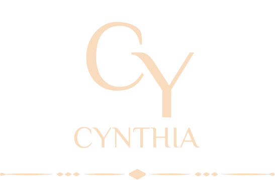

Sobre mim
Eu adorava fazer trabalhos envolvendo escrita, adorava escrever desde criança sobre tudo, e lembro-me que até um tempo atrás resenhas de series ou filmes, era tipo um bom Hobby.
Já trabalhei com outro idioma, e fiz amigos com outras nacionalidades. Sim, o espanhol sempre foi uma paixão, e entrou na minha vida, como algo mega divertido e que por casualidade entrou na minha vida profissional como algo extraordinário e incrível.
Já trabalhei na área de atendimento de companhia aérea, e confesso que nunca imaginei que gostaria tanto desse nicho diferente e cheios de aventuras, foi decerto um grande salto nas possibilidades.
Trabalhar em uma multinacional, esse posso considerar como parte de um sonho realizado, desde quando entrei na universidade e estagiei em diversas empresas de pequeno e médio porte, eu tinha o sonho de conhecer de perto a atuação de uma empresa multinacional, e ver como acontecia os processos interdepartamentais.
Já realizei trabalho voluntário com crianças, uma fase de grandes aprendizados e desenvolvimento de novas habilidades.